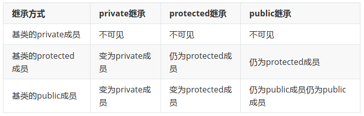
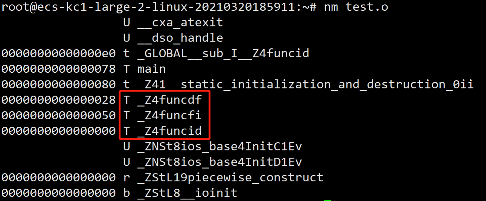
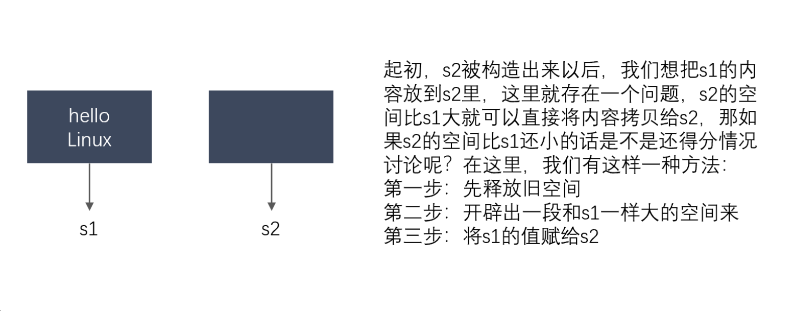
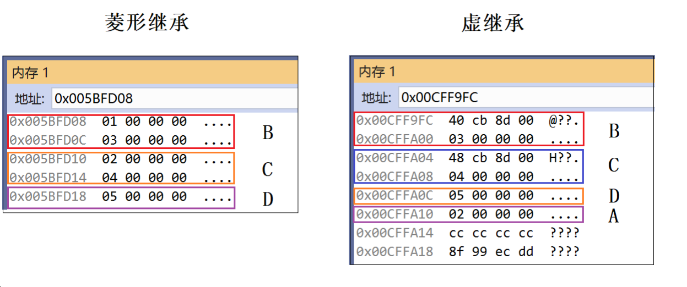
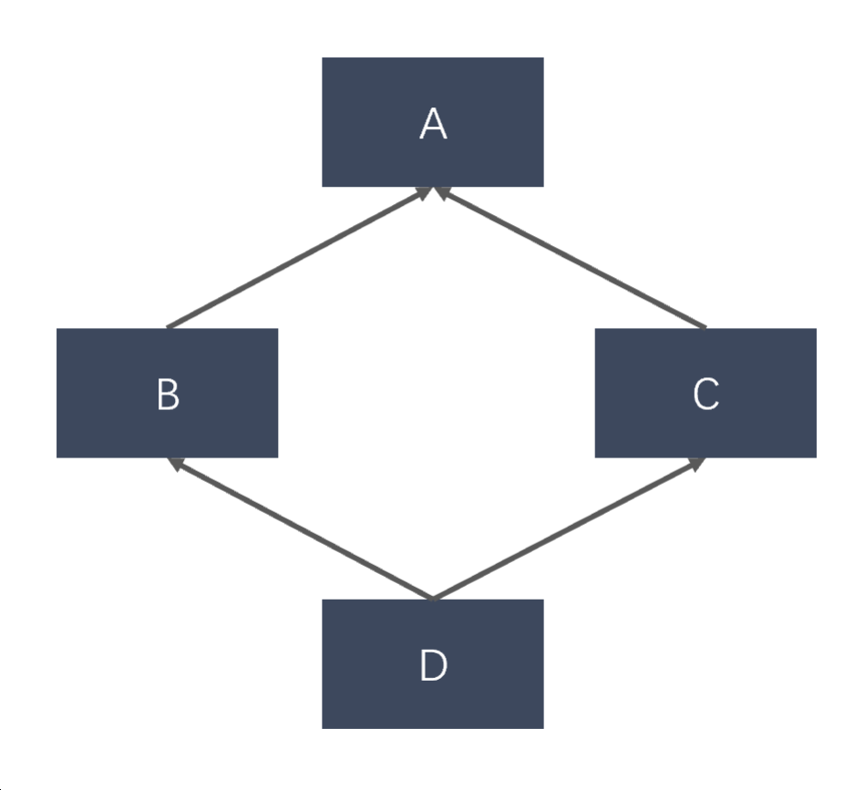
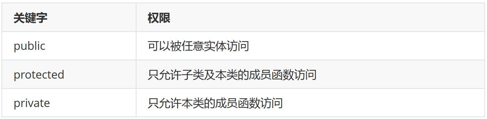

10.cpp
1、extern"C"的用法¶
为了能够**正确的在C++代码中调用C语言**的代码：在程序中加上extern "C"后，相当于告诉编译器这部分代码是C语言写的，因此要按照C语言进行编译，而不是C++。
哪些情况下使用extern “C”¶
（1）C++代码中调用C语言代码；
（2）在C++中的头文件中使用；
（3）在多个人协同开发时，可能有人擅长C语言，而有人擅长C++；
举个例子，C++中调用C代码：
#ifndef __MY_HANDLE_H__
#define __MY_HANDLE_H__
extern "C"{
typedef unsigned int result_t;
typedef void* my_handle_t;
my_handle_t create_handle(const char* name);
result_t operate_on_handle(my_handle_t handle);
void close_handle(my_handle_t handle);
}
综上，总结出使用方法，在C语言的头文件中，对其外部函数只能指定为extern类型，C语言中不支持extern "C"声明，在.c文件中包含了extern "C"时会出现编译语法错误。
所以使用extern "C"全部都放在于cpp程序相关文件或其头文件中。
总结出如下形式¶
（1）C++调用C函数：¶
（2）C调用C++函数¶
1、C++编译是和C有什么不同¶
编译区别：由于C++支持函数重载，因此编译器编译函数的过程中会**将函数的参数类型也加到编译后的代码中**，而**不仅仅是函数名**；而C语言并不支持函数重载，因此编译C语言代码的函数时不会带上函数的参数类型，一般只包括函数名。
2、你知道空类的大小是多少吗？¶
- C++空类的大小不为0，不同编译器设置不一样，vs设置为**1**；
- 带有虚函数的C++类大小不为1，因为每一个对象会有一个vptr指向虚函数表，具体大小根据指针大小确定；
- C++标准指出，不允许一个对象（当然包括类对象）的大小为0，不同的对象不能具有相同的地址；
- C++中要求对于类的每个实例都必须有独一无二的地址,那么**编译器自动为空类分配一个字节大小，这样便保证了每个实例均有独一无二的内存地址**。
3、构造函数一般不定义为虚函数的原因¶
（1）创建一个对象时需要确定对象的类型，而虚函数是在运行时动态确定其类型的。在构造一个对象时，由于对象还未创建成功，编译器无法知道对象的实际类型
（2）虚函数的调用需要虚函数表指针vptr，而该指针存放在对象的内存空间中，若构造函数声明为虚函数，那么由于对象还未创建，还没有内存空间，更没有虚函数表vtable地址用来调用虚构造函数了
（3）虚函数的作用在于通过父类的指针或者引用调用它的时候能够变成调用子类的那个成员函数。而**构造函数是在创建对象时自动调用的，不可能通过父类或者引用去调用，因此就规定构造函数不能是虚函数**
（4）析构函数一般都要声明为虚函数，这个应该是老生常谈了，这里不再赘述
4、为什么析构函数一般写成虚函数？¶
由于类的多态性，基类指针可以指向派生类的对象，如果**删除该基类的指针，就会调用该指针指向的派生类析构函数，而派生类的析构函数又自动调用基类的析构函数，这样整个派生类的对象完全被释放**。
如果析构函数**不被声明成虚函数，则编译器实施静态绑定**，在**删除基类指针时，只会调用基类的析构函数而不调用派生类析构函数，这样就会造成派生类对象析构不完全，造成内存泄漏**。
所以将析构函数声明为虚函数是十分必要的。在实现多态时，当用基类操作派生类，在析构时防止只析构基类而不析构派生类的状况发生，要将基类的析构函数声明为虚函数。
#include <iostream>
using namespace std;
class Parent{
public:
Parent(){
cout << "Parent construct function" << endl;
};
~Parent(){
cout << "Parent destructor function" <<endl;
}
};
class Son : public Parent{
public:
Son(){
cout << "Son construct function" << endl;
};
~Son(){
cout << "Son destructor function" <<endl;
}
};
int main()
{
Parent* p = new Son();
delete p;
p = NULL;
return 0;
}
//运行结果：
//Parent construct function
//Son construct function
//Parent destructor function
将基类的析构函数声明为虚函数：
#include <iostream>
using namespace std;
class Parent{
public:
Parent(){
cout << "Parent construct function" << endl;
};
virtual ~Parent(){
cout << "Parent destructor function" <<endl;
}
};
class Son : public Parent{
public:
Son(){
cout << "Son construct function" << endl;
};
~Son(){
cout << "Son destructor function" <<endl;
}
};
int main()
{
Parent* p = new Son();
delete p;
p = NULL;
return 0;
}
//运行结果：
//Parent construct function
//Son construct function
//Son destructor function
//Parent destructor function
但存在一种特例，在CRTP模板中，不应该将析构函数声明为虚函数，理论上所有的父类函数都不应
该声明为虚函数，因为这种继承方式，不需要虚函数表。
（基类指针指向派生类对象时，同名函数调用父类的；同名虚函数调用时确定，用子类的）
小林：¶
析构函数被设为虚函数主要是为了解决基类指针指向派生类对象时的资源释放问题。
如果我们有一个**基类指针，它实际上指向一个派生类对象**，当**我们删除这个基类指针时，如果析构函数不是虚函数，那么就只会调用基类的析构函数，而不会调用派生类的析构函数。这可能会导致派生类对象的一些资源没有被正确释放，从而引发内存泄漏等问题**。
如果我们将**析构函数设置为虚函数**，那么**在删除基类指针时，会首先调用派生类的析构函数，然后再调用基类的析构函数，从而确保所有的资源都能被正确释放**。
5、了解模板吗？可以实现一个特定类型的吗？¶
C++模板是一种对类型进行参数化的工具，通常有两种形式：函数模板和类模板。函数模板针对仅参数类型不同的函数；类模板针对仅数据成员和成员函数类型不同的类。使用模板的目的就是能够让程序员编写与类型无关的代码。
代码参考¶
特化¶
在C++中，可以使用**特化来为特定类型提供特定的实现**。例如，我们**可以为某个特定类型定义一个函数模板，然后在该类型上特化该函数模板，以提供特定于该类型的实现。以满足特定需求或优化性能**。
C++中有两种主要的特化形式：类模板特化和函数模板特化。
- 类模板特化（Class Template Specialization）： 类模板特化允许**为特定类型提供独立于通用模板定义的实现**。特化的语法如下所示：
```cpp
template
template <>
class MyTemplate``
在上述示例中，MyTemplate是一个通用的类模板，但通过template <>和类型int的特化声明，我们为int` 类型提供了特殊的实现逻辑。
- 函数模板特化（Function Template Specialization）： 函数模板特化允许为特定类型提供独立于通用模板定义的函数实现。特化的语法如下所示：
```cpp
template
template <>
void myFunction``
在上述示例中，myFunction是一个通用的函数模板，但通过template <>和类型int的特化声明，我们为int` 类型提供了特殊的函数实现。
需要注意的是，特化是一种有选择地为特定类型提供实现的机制，通常用于处理特定类型的边界情况或针对某些类型进行性能优化。在使用特化时，应慎重考虑，并确保特化实现真正符合需求，避免滥用导致代码的复杂性增加。
7、指针和引用的区别？¶
区别¶
- 指针是一个变量，存储的是一个地址，引用跟原来的变量实质上是同一个东西，是原变量的别名
- 指针可以有多级，引用只有一级
- 指针可以为空，引用不能为NULL且在定义时必须初始化
- 指针在初始化后可以改变指向，而引用在初始化之后不可再改变
- sizeof指针得到的是本指针的大小，sizeof引用得到的是引用所指向变量的大小
- 当把指针作为参数进行传递时，也是将实参的一个拷贝传递给形参，两者指向的地址相同，但不是同一个变量，在函数中改变这个变量的指向不影响实参，而引用却可以。
- 引用本质是一个指针，同样会占4字节内存；指针是具体变量，需要占用存储空间（，具体情况还要具体分析）。
- 引用在声明时必须初始化为另一变量，一旦出现必须为typename refname &varname形式；指针声明和定义可以分开，可以先只声明指针变量之前支付来学院宣讲面试，我投了C++，而不初始化，等用到时再指向具体变量。
- 引用一旦初始化之后就不可以再改变（变量可以被引用为多次，但引用只能作为一个变量引用）；指针变量可以重新指向别的变量。
- 不存在指向空值的引用，必须有具体实体；但是存在指向空值的指针。
参考代码¶
void test(int *p)
{
int a=1;
p=&a;
cout<<p<<" "<<*p<<endl;
}
int main(void)
{
int *p=NULL;
test(p);
if(p==NULL)
cout<<"指针p为NULL"<<endl;
return 0;
}
//运行结果为：
//0x22ff44 1
//指针p为NULL
void testPTR(int* p) {
int a = 12;
p = &a;
}
void testREFF(int& p) {
int a = 12;
p = a;
}
void main()
{
int a = 10;
int* b = &a;
testPTR(b);//改变指针指向，但是没改变指针的所指的内容
cout << a << endl;// 10
cout << *b << endl;// 10
a = 10;
testREFF(a);
cout << a << endl;//12
}
在编译器看来, int a = 10; int &b = a 等价于 int * const b = &a; 而 b = 20; 等价于 *b = 20; 自动转换为指针和自动解引用.
8、指针和const的用法¶
- 当const修饰指针时，由于const的位置不同，它的修饰对象会有所不同。
int *const p2中const修饰p2的值,所以理解为p2的值不可以改变，即p2只能指向固定的一个变量地址，但可以通过*p2读写这个变量的值。顶层指针表示指针本身是一个常量int const *p1或者const int *p1两种情况中const修饰*p1，所以理解为*p1的值不可以改变，即不可以给*p1赋值改变p1指向变量的值，但可以通过给p赋值不同的地址改变这个指针指向。底层指针表示指针所指向的变量是一个常量。
9、为什么不能把所有的函数写成内联函数?/内联函数的缺点？¶
内联函数以代码复杂为代价，它以省去函数调用的开销来提高执行效率。
所以一方面如果内联函数体内代码执行时间相比函数调用开销较大，则没有太大的意义；
另一方面每一处内联函数的调用都要复制代码，消耗更多的内存空间，因此以下情况不宜使用内联函数：
- 函数体内的代码比较长，将导致内存消耗代价
- 函数体内有循环，函数执行时间要比函数调用开销大
在内联函数内**不允许用循环语句和开关语句**，如果内联函数有这些语句，则**编译将该函数视同普通函数那样产生函数调用代码,递归函数是不能被用来做内联函数的**
什么是内联函数¶
在C++中，使用关键字"inline"可以声明一个内联函数。声明为内联函数的函数会在**编译时被视为候选项，编译器会尝试将其展开，将函数体直接插入到调用点处**。这样可以避免函数调用的开销，减少了函数调用的栈帧等额外开销，从而提高程序的执行效率。
缺点：¶
- 代码膨胀：内联函数会在每个调用它的地方进行代码替换，这可能导致代码膨胀。如果内联函数体非常大或者被频繁调用，会增加可执行文件的大小，可能导致缓存不命中，影响性能。
- 可读性降低：内联函数会将函数体嵌入到调用点，可能导致代码的可读性降低。函数体被分散在多个地方，可能会使代码难以理解和维护。
- 编译时间增加：内联函数需要在每个调用点进行代码替换，这会增加编译时间。特别是当内联函数被广泛使用时，编译时间可能会显著增加。
10、C++的多态是如何实现的？¶
C++的多态性，一言以蔽之就是：
在基类的函数前加上**virtual**关键字，在**派生类中重写该函数，运行时将会根据所指对象的实际类型来调用相应的函数**，如果对象类型是派生类，就调用派生类的函数，如果对象类型是基类，就调用基类的函数。
举个例子：
#include <iostream>
using namespace std;
class Base{
public:
virtual void fun(){
cout << " Base::func()" <<endl;
}
};
class Son1 : public Base{
public:
virtual void fun() override{
cout << " Son1::func()" <<endl;
}
};
class Son2 : public Base{
};
int main()
{
Base* base = new Son1;
base->fun();
base = new Son2;
base->fun();
delete base;
base = NULL;
return 0;
}
// 运行结果
// Son1::func()
// Base::func()
例子中，Base为基类，其中的函数为虚函数。
子类1继承并重写了基类的函数，子类2继承基类但没有重写基类的函数，从结果分析子类体现了多态性，那么为什么会出现多态性，其底层的原理是什么？
虚表和虚基表指针¶
这里需要引出虚表和虚表指针的概念。
虚表：虚函数表的缩写，类中含有virtual关键字修饰的方法时，编译器会自动生成虚表，它是在编译期确定的
虚表指针：在含有虚函数的类实例化对象时，对象地址的前四个字节存储的指向虚表的指针，它是在构造函数中被初始化的


上图中展示了虚表和虚表指针在基类对象和派生类对象中的模型，下面阐述实现多态的过程：
1、编译器在发现基类中有虚函数时，会自动为每个含有虚函数的类生成一份虚表，该表是一个一维数组，虚表里保存了虚函数的入口地址
2、编译器会在每个对象的前四个字节中保存一个虚表指针，即**vptr**，指向对象所属类的虚表。
在**构造时，根据对象的类型去初始化虚指针vptr，从而让vptr指向正确的虚表，从而在调用虚函数时，能找到正确的函数**。
3、所谓的合适时机，在派生类定义对象时，程序运行会自动调用构造函数，在构造函数中对虚表指针进行初始化。在构造子类对象时，会先调用父类的构造函数，此时，编译器只“看到了”父类，并为父类对象初始化虚表指针，令它指向父类的虚表；当调用子类的构造函数时，为子类对象初始化虚表指针，令它指向子类的虚表
4、当派生类对基类的虚函数**没有重写时**，派生类的虚表指针指向的是基类的虚表；当派生类对基类的虚函数**重写时**，派生类的虚表指针指向的是自身的虚表；当派生类中有自己的虚函数时，在自己的虚表中将此虚函数地址添加在后面
这样**指向派生类的基类指针在运行时，就可以根据派生类对虚函数重写情况动态的进行调用，从而实现多态性**。
分类¶
C++中的多态主要通过虚函数和继承来实现。多态分为两种：编译时多态和运行时多态。
- 编译时多态：也称为静态多态或早绑定。这种多态是通过函数重载和模板来实现的。
- 运行时多态：也称为动态多态或晚绑定。这种多态是通过虚函数和继承来实现的。当基类的指针或引用指向派生类对象时，调用的虚函数将是派生类的版本，这就实现了运行时多态。
面试宝典¶
由于派生类重写基类方法，然后**用基类引用指向派生类对象，调用方法时候会进行动态绑定，这就是多** 态。 多态分为静态多态和动态多态：
- 静态多态：编译器在编译期间完成的，编译器会根据实参类型来推断该调用哪个函数，如果有对应 的函数，就调用，没有则在编译时报错。 比如一个简单的加法函数：
include<iostream>
using namespace std;
int Add(int a,int b)//1
{
return a+b;
}
char Add(char a,char b)//2
{
return a+b;
}
int main()
{
cout<<Add(666,888)<<endl;//1
cout<<Add('1','2');//2
return 0;
}
显然，第一条语句会调用函数1，而第二条语句会调用函数2，这绝不是因为函数的声明顺序，不 信你可以将顺序调过来试试。
- 动态多态：其实要实现动态多态，需要几个条件——即动态绑定条件：
- 虚函数。基类中必须有虚函数，在派生类中必须重写虚函数。
- 通过基类类型的指针或引用来调用虚函数。
说到这，得插播一条概念：重写——也就是基类中有一个虚函数，而在派生类中也要重写一个原型 （返回值、名字、参数）都相同的虚函数。不过协变例外。协变是重写的特例，基类中返回值是基 类类型的引用或指针，在派生类中，返回值为派生类类型的引用或指针。
//协变测试函数
#include<iostream>
using namespace std;
class Base
{
public:
virtual Base* FunTest()
{
cout << "victory" << endl;
return this;
}
};
class Derived :public Base
{
public:
virtual Derived* FunTest()
{
cout << "yeah" << endl;
return this;
}
};
int main()
{
Base b;
Derived d;
b.FunTest();
d.FunTest();
return 0;
}
10、虚函数表里存放的内容是什么时候写进去的？¶
- 虚函数表是一个存储虚函数地址的数组,以NULL结尾。虚表（vftable）在编译阶段生成， （1）对象内存空间开辟以后，（2）写入对象中的 vfptr，（3）然后调用构造函数(构造函数里创建了虚表指针，根据对象的类型，没有重写时，派生类的虚表指针指向的是基类的虚表；当派生类对基类的虚函数重写时，派生类的虚表指针指向的是自身的虚表) 。即：虚表在构造函数之前写入
- 除了在构造函数之前写入之外，我们还需要考虑到虚表的二次写入机制，通过此机制让**每个对象的虚表指针都能准确的指向到自己类的虚表**，为实现动多态提供支持。
11、什么是纯虚函数，与虚函数的区别¶
- 虚函数是为了实现动态编联产生的，目的是通过基类类型的指针指向不同对象时，自动调用相应的、和基类同名的函数（使用同一种调用形式，既能调用派生类又能调用基类的同名函数）。
- 虚函数**需要在基类中加上virtual修饰符修饰，因为virtual会被隐式继承，所以子类中相同函数都是虚函数**。
- 当一个成员函数被声明为虚函数之后，其派生类中同名函数自动成为虚函数，在派生类中重新定义此函数时要求函数名、返回值类型、参数个数和类型全部与基类函数相同。
- 纯虚函数只是相当于一个**接口名**，但含有纯虚函数的类**不能够实例化**。
纯虚函数首先是虚函数，其次它没有函数体，取而代之的是用“=0”。
既然是虚函数，它的函数指针会被存在虚函数表中，由于纯虚函数并没有具体的函数体，因此它在虚函数表中的值就为0，而具有函数体的虚函数则是函数的具体地址。
一个类中如果有纯虚函数的话，称其为抽象类。抽象类**不能用于实例化对象**，否则会报错。抽象类一般用于定义一些公有的方法。子类继承抽象类也必须实现其中的纯虚函数才能实例化对象。
举个例子：
#include <iostream>
using namespace std;
class Base
{
public:
virtual void fun1()
{
cout << "普通虚函数" << endl;
}
virtual void fun2() = 0;
virtual ~Base() {}
};
class Son : public Base
{
public:
virtual void fun2()
{
cout << "子类实现的纯虚函数" << endl;
}
};
int main()
{
Base* b = new Son;
b->fun1(); //普通虚函数
b->fun2(); //子类实现的纯虚函数
return 0;
}
纯虚函数是在基类中声明的虚函数，它在基类中没有定义，但要求任何派生类都要定义自己的实现方法。在C++中，纯虚函数的声明形式如下：
其中，= 0就表示这是一个纯虚函数。
含有纯虚函数的类被称为抽象类。抽象类不能被实例化，只能作为接口使用。派生类必须实现所有的纯虚函数，否则该派生类也会变成抽象类。
纯虚函数的应用场景主要包括：
- 设计模式：例如在模板方法模式中，基类定义一个算法的骨架，而将一些步骤延迟到子类中。这些需要在子类中实现的步骤就可以声明为纯虚函数。
- 接口定义：可以创建一个只包含纯虚函数的抽象类作为接口。所有实现该接口的类都必须提供这些函数的实现。
12、new和malloc的区别¶
1、 new/delete是C++关键字，需要编译器支持。malloc/free是库函数，需要头文件支持；
2、 使用new操作符申请内存分配时无须指定内存块的大小，编译器会根据类型信息自行计算。而malloc则需要显式地指出所需内存的尺寸。
3、 new操作符内存分配成功时，返回的是对象类型的指针，类型严格与对象匹配，无须进行类型转换，故new是符合类型安全性的操作符。而malloc内存分配成功则是返回void * ，需要通过强制类型转换将void*指针转换成我们需要的类型。
4、 new内存分配失败时，会抛出bad_alloc异常。malloc分配内存失败时返回NULL。
5、 new会先调用operator new函数，申请足够的内存（通常底层使用malloc实现）。然后调用类型的构造函数，初始化成员变量，最后返回自定义类型指针。delete先调用析构函数，然后调用operator delete函数释放内存（通常底层使用free实现）。malloc/free是库函数，只能动态的申请和释放内存，无法强制要求其做自定义类型对象构造和析构工作。
13、讲讲new的实现，其中new什么时候返回空指针，什么时候抛出异常，抛的是什么异常¶
new 是C++中用于动态分配内存的操作符，它的实现可以简单概括为两个步骤：内存分配和对象构造。
-
内存分配：当使用
new运算符来创建一个对象时，会首先分配足够大小的内存空间。如果内存分配失败，即没有足够的可用内存，那么new操作符会返回一个空指针（nullptr）。 -
对象构造：在成功分配内存后，会调用相应类型的构造函数来构造对象。如果对象的构造过程中发生异常，
new操作符会抛出std::bad_alloc异常。这是因为在构造过程中可能**需要执行一些分配资源、初始化**等可能导致失败的操作。
下面是一个示例：
try {
MyClass* obj = new MyClass; // 尝试动态分配内存并构造对象
// ...
} catch (const std::bad_alloc& e) {
// 内存分配失败，处理异常
// ...
}
需要注意的是，虽然 new 可能会返回空指针或抛出异常，但在现代的C++编译器中，通常对于内置类型的动态分配内存，如 int、float 等，不会抛出异常，而是直接返回空指针。这是因为内置类型的构造过程不存在可能导致失败的操作。
此外，为了防止内存泄漏，每次使用 new 分配内存后，应该在不再使用时通过 delete 或 delete[] 运算符释放相应的内存空间。
14、malloc线程安全吗，多线程malloc系统怎么设计¶
malloc 函数本身并不是线程安全的。在多线程环境下，多个线程同时调用 malloc 可能会导致竞争条件和内存错误。
为了在多线程环境下安全地使用 malloc，可以采取以下一些策略：
-
使用互斥锁：在使用
malloc前后通过互斥锁（例如std::mutex）来保护共享资源，确保同一时间只有一个线程调用malloc。 -
使用线程局部存储（Thread Local Storage, TLS）：将
malloc的调用限定在每个线程的私有内存中。可以使用线程特定数据（Thread-Specific Data, TSD）或者平台提供的机制，如pthread_key_create()和pthread_setspecific()来实现线程局部存储。 -
使用内存池（Memory Pool）：在多线程场景下，可以预先分配一块较大的内存作为内存池，并由每个线程从内存池中动态分配内存。这种方式可以减少对全局内存分配器的竞争，提高性能。
需要注意的是，以上方法都需要考虑到线程安全和性能之间的平衡，以及在释放内存时的处理。另外，C++ 中也提供了更好的内存管理方式，如使用 new 和 delete 运算符、智能指针等，可以更好地管理内存资源，并且在多线程环境下具有更好的线程安全性。
15、C++ map是线程安全的吗，怎么保证map线程安全¶
在标准C++中，std::map 并没有被设计为线程安全的容器。这意味着在多个线程同时读取和修改 std::map 对象时，可能会产生竞态条件（race condition）和数据不一致的问题。
如果你需要在多线程环境下使用 std::map 并保证线程安全，可以考虑以下两种方式：
-
使用互斥锁（Mutex） ：在每次对
std::map进行读取或修改操作之前，使用互斥锁进行同步，即确保同一时间只有一个线程能够访问和修改std::map。这样可以避免并发访问导致的数据竞争问题。具体实现可**借助std::mutex和std::lock_guard等类来管理互斥锁的加锁和解锁操作**。 -
使用线程安全的替代容器：C++17 引入了一些线程安全的并发容器，例如
std::map的线程安全替代品是std::map<std::shared_mutex>或std::map<std::shared_timed_mutex>。它们使用了**共享-排他锁**（Shared-Exclusive Locking）机制，允许多个线程并发地读取容器，但只允许一个线程进行写入操作。通过使用这些线程安全的容器，可以避免显式地添加互斥锁来保护容器的并发访问。
无论选择哪种方式，都需要根据具体的使用场景和需求来确定最合适的保证线程安全的方法。注意，在进行并发编程时，除了保证数据结构本身的线程安全性外，还需要注意其他与多线程相关的问题，如原子操作、内存可见性等。
16、const关键字的作用有哪些?¶
- 阻止一个变量被改变，可以使用const关键字。在定义该const变量时，通常需要对它进行初始化，因为以后就没有机会再去改变它了；
- 对**指针**来说，可以指定指针本身为const，也可以指定指针所指的数据为const，或二者同时指定为const；
- 在一个函数声明中，const可以修饰形参，表明它是一个输入参数，在函数内部不能改变其值；
- 对于类的成员函数，若指定其为const类型，则表明其是一个**常函数**，不能修改类的成员变量，类的常对象只能访问类的常成员函数；
- 对于类的成员函数，有时候必须指定其返回值为const类型，以使得其返回值不为“左值”。
- const成员函数可以访问非const对象的非const数据成员、const数据成员，也可以访问const对象内的所有数据成员；
- 非const成员函数可以访问非const对象的非const数据成员、const数据成员，但不可以访问const对象的任意数据成员；
- 一个没有明确声明为const的成员函数被看作是将要修改对象中数据成员的函数，而且编译器不允许它为一个const对象所调用。因此const对象只能调用const成员函数。
- const类型变量可以通过类型转换符const_cast将const类型转换为非const类型；
- const类型变量必须定义的时候进行初始化，因此也导致如果类的成员变量有const类型的变量，那么该变量必须在类的初始化列表中进行初始化；
- 对于函数值传递的情况，因为参数传递是通过复制实参创建一个临时变量传递进函数的，函数内只能改变临时变量，但无法改变实参。则这个时候无论加不加const对实参不会产生任何影响。但是在引用或指针传递函数调用中，因为传进去的是一个引用或指针，这样函数内部可以改变引用或指针所指向的变量，这时const 才是实实在在地保护了实参所指向的变量。因为在编译阶段编译器对调用函数的选择是根据实参进行的，所以，只有引用传递和指针传递可以用是否加const来重载。一个拥有顶层const的形参无法和另一个没有顶层const的形参区分开来。
17、面试题：std::unique_lock和std::lock_guard¶
std::unique_lock和std::lock_guard都是C++11引入的，用于**管理互斥锁**定。它们的设计意图是提供RAII（Resource Acquisition Is Initialization）风格的锁管理，以**确保在作用域结束或异常发生时能自动释放锁，避免资源泄漏和死锁**。
std::lock_guard:
std::lock_guard是一种简单的RAII锁保管对象，主要用于保护某个代码段。当创建std::lock_guard对象时，它会尝试**立即获取互斥锁**。如果成功，std::lock_guard将拥有该锁，否则代码将阻塞，直至锁可用。当std::lock_guard对象离开其作用域时，其析构函数会自动解锁。
基本用法：
注意：
1. std::lock_guard不提供手动锁定和解锁功能。
2. std::lock_guard不支持所有权转移。
std::unique_lock:
std::unique_lock提供了比std::lock_guard更为灵活的锁保管，支持更多操作。与std::lock_guard 类似，std::unique_lock也是一个RAII锁保管对象。但它提供了更多的功能，如**延迟锁定、手动锁定、解锁**、尝试锁定以及**所有权转移**。
基本用法：
延迟锁定，手动锁定和解锁的示例：
{
std::unique_lock<std::mutex> lock(my_mutex, std::defer_lock);
// 延迟锁定
lock.lock();
// 临界区
lock.unlock();
// 在解锁后的操作
}
std::unique_lock资源开销稍高于std::lock_guard。
总结如下:
- 对于简单的用例，std::lock_guard是首选，因为它非常简单且轻量。
- 对于需要手动锁定/解锁、尝试锁定或延迟锁定等高级功能的用例，应使用std::unique_lock。
你应该根据程序的需求和目标来选择使用哪个。在常规情况下，std::lock_guard通常足够使用，但对于需要更多控制的情况，应以灵活性和功能为优先选择std::unique_lock。
18、std::mutex和std::lock_gard¶
std::mutex和std::lock_guard是C++标准库中用于实现**线程安全**的工具。
std::mutex（互斥锁）是一个**同步原语**，用于保护共享资源的访问。多个线程可以使用std::mutex来对共享资源进行互斥访问，以避免数据竞争和不一致性。通过调用lock()成员函数来获取锁，并使用unlock()成员函数释放锁。
std::lock_guard是一个**模板类**，它提供了一种方便的方式来**管理std::mutex的锁定和解锁操作**。在创建std::lock_guard对象时，会**自动获取所关联的std::mutex的锁，当该对象超出作用域时，会自动释放锁，确保不会忘记释放锁而导致死锁等问题**。
下面是一个使用std::mutex和std::lock_guard实现线程安全访问共享资源的示例：
#include <iostream>
#include <thread>
#include <mutex>
std::mutex mtx;
int sharedData = 0;
void incrementData()
{
std::lock_guard<std::mutex> lock(mtx); // 获取锁
sharedData++; // 访问共享资源
} // 自动释放锁
int main()
{
std::thread t1(incrementData);
std::thread t2(incrementData);
t1.join();
t2.join();
std::cout << "Shared data: " << sharedData << std::endl;
return 0;
}
在上述示例中，std::lock_guard用于自动获取和释放std::mutex的锁，确保了对共享资源sharedData的线程安全访问。两个线程t1和t2同时对sharedData进行递增操作，但由于互斥锁的作用，它们不会发生竞争条件，最终得到正确的结果。
使用std::mutex和std::lock_guard可以简化编写线程安全代码的过程，提供了一种可靠的同步机制来防止并发问题的发生。
20、对面向对象的理解¶
C++面向对象编程就是**把一切事物都变成一个个对象，用属性和方法来描述对象的信息**，比如定义一个猫对象，猫的眼睛、毛发、嘴巴就可以定义为猫对象的属性，猫的叫声和走路就可以定义为猫对象的方法。
用对象的方式编程，不仅方便了程序员，也使得代码的**可复用性、可维护性**变好。
C++面向对象的三大特性是封装、继承、多态。
- 封装：封装是将数据（变量）和操作数据的函数组合在一起形成一个"对象"，并隐藏了对象的内部细节。这可以防止外部代码直接访问对象的内部表示。
- 继承：继承是从现有类派生出新类的过程。新类包含了现有类的所有特性，并可以添加自己的新特性。这有助于代码重用和减少复杂性。
- 多态：多态是指允许使用一个接口来表示不同的类型。在C++中，多态可以通过虚函数实现，使得不同的对象可以以自己的方式响应相同的消息。
21、简述一下什么是面向对象¶
- 面向对象是一种编程思想，把一切东西看成是一个个对象，比如人、耳机、鼠标、水杯等，他们各 自都有属性，比如：耳机是白色的，鼠标是黑色的，水杯是圆柱形的等等，把这些对象拥有的属性 变量和操作这些属性变量的函数打包成一个类来表示
- 面向过程和面向对象的区别 面向过程：根据业务逻辑从上到下写代码 面向对象：将数据与函数绑定到一起，进行封装，这样能够更快速的开发程序，减少了重复代码的 重写过程
22、普通的函数和成员函数的区别？¶
- 普通函数是在类的**外部**定义的，而成员函数是在类的**内部**定义的。
- 普通函数不能直接**访问**类的私有（private）和保护（protected）成员，而成员函数可以访问类的所有成员，包括私有和保护成员。
- 普通函数可以直接**调用**，而成员函数需要通过类的对象来调用。
- 成员函数有一个特殊的指针this，它指向调用该成员函数的对象。普通函数没有这个指针。
24、this 指针是干嘛的？¶
this 指针是指向当前对象的地址。this指针主要用于在类的成员函数中访问当前对象的成员变量和成员函数。
当一个对象调用自己的成员函数时，编译器会**隐式**地将对象的地址**传递**给成员函数，作为一个**隐藏的参数**，这个隐藏的参数就是this指针。通过this指针，成员函数可以访问和操作当前对象的成员变量和成员函数。
this指针只能在非静态成员函数中使用，因为静态成员函数没有this指针，它们不属于任何具体的对象
26、static关键字的作用？¶
static:静态变量声明，分为局部静态变量，全局静态变量，类静态成员变量。也可修饰类成员函数。有以下几类：
-
定义全局静态变量和局部静态变量：在变量前面加上static关键字。初始化的静态变量会在数据段 分配内存，未初始化的静态变量会在BSS段分配内存。直到程序结束，静态变量始终会维持当前值。 只不过全局静态变量和局部静态变量的作用域不一样；
-
局部静态变量：存储在静态存储区，程序运行期间只被初始化一次，作用域仍然为局部作用域，在**变量定义的函数或语句块中有效，程序结束时由操作系统回收资源**。
-
全局静态变量：存储在静态存储区，静**态存储区中的资源在程序运行期间会一直存在，直到程序结束由系统回收**。未初始化的变量会默认为0，作用域在声明他的文件中有效。
-
定义静态函数：在函数返回类型前加上static关键字，函数即被定义为静态函数。静态函数只能在 本源文件中使用；
-
在变量类型前加上static关键字，变量即被定义为静态变量。静态变量**只能在本源文件中使用**；
- 类静态成员变量：被类的所有对象共享，包括子对象。必须在类外初始化，不可以在构造函数内进行初始化。使用静态数据成员，它既可以被当成全局变量那样去存储，但又被隐藏在类的内部。类中的static静态数据成员拥有一块单独的存储区，而不管创建了多少个该类的对象。所有这些**对象的静态数据成员都共享这一块静态存储空间**。
- 类静态成员函数：所有对象共享该函数，不含this指针，不可使用类中非静态成员。 与静态成员变量类似，类里面同样可以定义静态成员函数。只需要在函数前加上关键字static即可。如静态成员函数也是类的一部分，而不是对象的一部分。所有这些对象的静态数据成员都**共享**这一块静态存储空间
29、const、static 关键字有什么区别¶
首先明白内存的五个区
- 栈(stack)：由编译器自动分配释放，存放函数的参数值，局部变量的值（除static），其操作方式类似于数据结构中的栈。
- 堆(heap)：一般由程序员分配释放，若程序员不释放，程序结束时可能由OS回收。注意它与数据结构中的堆(优先队列)是两回事，分配方式倒是类似于链表。
- 全局区(静态区)：全局变量和静态变量被分配到同一块内存中，在以前的C语言中，全局变量和静态变量又分为初始化的和未初始化的，在C++里面没有这个区分了，它们共同占用同一块内存区，在该区定义的变量若没有初始化，则会被自动初始化，例如int型变量自动初始为0，程序结束后由系统释放。
- 常量区：常量字符串就是放在这里的，如char str[]=”hello”，程序结束后由系统释放，区别const修饰的变量。全局常量
-
程序代码区：存放函数体的二进制代码。
-
static 声明的变量内存只分配一次，static 变量存放在**静态区**（包括局部静态变量和全局静态变量），程序结束后才会释放；该变量（static）只被分配一次，因此**它的值在下一次调用时依然可以维持上次结果的值**。
-
static数据成员必须**进行初始化，默认初始化为0**
-
模块内声明的static函数，可以被该模块内的函数进行调用，模块外的函数不可调用它
-
const 修饰的变量可以防止被改变，初始化后，就没有机会再去改变它。这样可以阻止一个变量被改变。
-
const 定义的常量在超出其作用域之后其空间会被释放，而static定义的静态常量在函数执行后不会释放其存储空间，程序结束之后才会释放。
-
使用
const关键字声明的变量通常被存储在程序的**常量区**（也称为只读数据区）。这个区域存储了在编译时确定的常量值，这些**值在程序运行期间不可修改**。这包括了全局的常量、字符串常量以及局部作用域中的常量（例如函数内部的const变量）。
31、C++ 中解释类模板和模板类的区别¶
-
一个类模板(类生成类)允许用户为类定义个一种模式，使得类中的某些数据成员、默认成员函数的参数，某些成员函数的返回值，能够取任意类型(包括系统预定义的和用户自定义的)。
-
只能在头文件中声明和定义
- 外部定义函数需要加上模板声明
- 模板类是类模板实例化后的一个产物，类模板比作是一个作饺子的模子，而模板类就是用这个模子做出来的饺子，至于饺子什么馅儿的就需要你自己去实例化自己的内容
类模板：https://blog.csdn.net/weixin_30907935/article/details/95182154
类模板代码例子：https://blog.csdn.net/small_prince_/article/details/80533105
33、C++ 中哪些函数不能被声明为虚函数？¶
- 普通函数（非类成员函数），可以重载
- 构造函数：虚函数指针指向虚函数地址，vptr指针在构造函数时候被初始化，而调用虚函数的前提是有vptr指针 参考
- 内联函数：虚函数的调用涉及到动态绑定，即在运行时根据对象的实际类型来确定要调用的函数。但是内联函数在**编译时就进行了代码插入，无法在运行时进行动态绑定**。因此，将内联函数声明为虚函数会导致矛盾，编译器无法同时在编译时进行内联优化和在运行时进行动态绑定。
- static成员函数**不能定义为虚函数：**静态成员函数没有this指针，没办法调用vptr指针 这也很简单，静态成员函数对于每个类来说只有一份代码，所有的对象都共享这一份代码，他也没 有要动态绑定的必要性。静态成员函数属于一个类而非某一对象,没有this指针,它无法进行对象的判别
- 友元函数 因为C++不支持友元函数的继承（友元函数的访问权限是基于类的，而不是基于继承关系的，友元函数的权限不会自动传递给派生类），对于**没有继承特性的函数没有虚函数**的说法。
虚函数的调用关系：this → vptr → vtable →virtual function
chatgpt¶
友元函数是一种特殊类型的函数，它可以访问一个类的私有成员，即使该函数不是类的成员。然而，由于友元函数的特性和虚函数的工作原理之间的差异，C++中的友元函数不能声明为虚函数。以下是原因：
虚函数的动态绑定：
虚函数允许在派生类中进行重写，并且通过基类的指针或引用来调用时，会在运行时根据对象的实际类型来决定要调用的函数。这种动态绑定需要一个额外的虚函数表（vtable）来存储函数指针，以便在运行时进行查找和调用。
友元函数的特性：
友元函数不是类的成员函数，虽然它能够访问类的私有成员，但它不具备类的成员函数的调用特性。友元函数无法利用虚函数表进行动态绑定，因为它不是类的成员，也不属于类的继承体系。它是独立于类的函数，与虚函数的继承和多态性机制不兼容。
综合考虑：
由于虚函数需要进行动态绑定，而友元函数是与类的成员关系无关的独立函数，将友元函数声明为虚函数会导致逻辑和实现上的冲突。同时，友元函数不会存在于虚函数表中，也无法通过基类指针或引用调用虚函数。
36、C++类的前向声明¶
一、使用场景
假设有两个类A和B，类A要将类B的对象(或者**指针**)作为自己的成员使用，并且类B将类A的对象(或者**指针**)作为自己可以访问的数据，那么这个时候要在a.h中include b.h,同时在b.h 中要include a.h，但是相互包含是不可以的，这个时候就要用到类的前向声明了。
类的前向声明是利用了编译器的特性，编译器在编译的过程中只需要知道各个元素的名称和相应的大小就可以。而在c++中每一个类的大小是固定的，这个时候使用前向声明的类就可以通过编译器。
比如class foo;
声明一个foo类，这个声明，有时候也叫做前向声明(forward declaration)，在声明完这个foo类之后，定义完这个foo类之前的时期，foo类是一个不完全的类型(incomplete type)，也就是说foo类是一个类型，但是这个类型的一些性质(比如包含哪些成员，具有哪些方法)都不知道。所以不能通过这个前向声明的类的指针或者对象去操作自己的成员。
二、使用方法
假设B类中已经包含了a.h,那么在A类中不能再包含b.h，要在A类中前向声明类B，如下
三、注意问题
1. 前向声明的类不能定义对象。
2. 可以用于定义指向这个类型的指针和引用。
2. 用于申明使用该类型作为形参或返回类型的函数。
39、值语义与对象语义¶
【1】什么是值语义？ 所谓值语义是指**目标对象由源对象拷贝生成，且生成后与源对象完全无关，彼此独立存在，改变互不影响**。就像 int 类型变量相互拷贝一样。 C++的内置类型（bool/int/double/char）都是值语义，标准库里的 complex<>、pair<>、vector<>、map<>、string 等等类型也都是值语义。 拷贝之后就与源对象完全脱离关系。
【2】什么是对象语义？ 对象语义也叫指针语义，引用语义等。 通常是指一个**目标对象由源对象拷贝生成**，但生成后与源对象之间依然**共享底层资源**，对任何一个的改变都将随之改变另一个。 就像包含有指针成员变量的自定义类在默认拷贝构造函数下对其对象之间进行的拷贝。拷贝后目标对象和源对象的指针成员变量**仍指向同一块内存数据**。 如果当其中一个被析构掉后，另一个对象的指针成员就会沦为名副其实的悬垂指针！
又比如，Thread 是对象语义，拷贝 Thread 是无意义的，也是被禁止的：因为 Thread 代表线程，拷贝一个Thread对象并不能让系统增加一个一模一样的线程。
【3】两者之间的联系 “值” 与 “对象”类型之间并没有严格定义的区分。但通常可以观察到下列不同： 值 是 死的、 傻的、 简单的、 具体的、 可复制的 对象 是 活的、 聪明的、 复杂的、 抽象的、 不可复制的 这里的“复杂性”主要还是指行为的复杂性，而非结构的复杂性。例如，
仍然是一个不折不扣的“值”类型。 值语义的一个巨大好处是生命期管理很简单，比如 int 类型一样——你不需要操心 int 对象 的生命期。 值语义的对象要么是栈对象，或者直接作为其它对象的数据成员，因此我们不用担心它的生命期（一个函数使用自己栈上的对象，一个成员函数使用自己的数据成员变量）。 相反，对象语义的 对象由于不能拷贝，我们只能通过指针或引用来使用它。 一旦使用指针和引用来操作对象，那么就要担心所指的对象是否已被释放，这一度是C++程序bug的一大来源。 此外，由于C++只能通过指针或引用来获得多态性，那么在C++里从事基于继承和多态的面向对象编程有其本质的困难——内存资源管理。 Good Good Study, Day Day Up. 顺序 选择 循环 总结 本文转自 https://www.cnblogs.com/Braveliu/p/3285908.html，如有侵权，请联系删除。
仍然是一个不折不扣的“值”类型。 值语义的一个巨大好处是生命期管理很简单，比如 int 类型一样——你不需要操心 int 对象 的生命期。 值语义的对象要么是栈对象，或者直接作为其它对象的数据成员，因此我们不用担心它的生命期（一个函数使用自己栈上的对象，一个成员函数使用自己的数据成员变量）。 相反，对象语义的 对象由于不能拷贝，我们只能通过指针或引用来使用它。 一旦使用指针和引用来操作对象，那么就要担心所指的对象是否已被释放，这一度是C++程序bug的一大来源。 此外，由于C++只能通过指针或引用来获得多态性，那么在C++里从事基于继承和多态的面向对象编程有其本质的困难——内存资源管理。 Good Good Study, Day Day Up. 顺序 选择 循环 总结 本文转自 https://www.cnblogs.com/Braveliu/p/3285908.html，如有侵权，请联系删除。
42、C++条件变量¶
当涉及到多线程编程时，C++的条件变量（Condition Variables）是一种重要的**同步机制**，用于**实现线程之间的协调和通信**。它通常与互斥锁（Mutex）一起使用，以实现更高级别的线程同步。
C++条件变量的主要目的是**允许一个或多个线程等待某个条件达成，然后在满足条件时被唤醒。它是通过阻塞线程并等待另一个线程显式地通知来实现的**。
以下是使用条件变量的一般步骤：
- 创建条件变量和互斥锁：首先，需要创建一个条件变量和一个相应的互斥锁。互斥锁用于保护共享资源，而条件变量用于等待和通知。
- 等待条件：等待线程在访问共享资源之前，首先需要获得互斥锁。然后，通过调用
wait函数来等待条件的满足。
上面的代码中，condition是一个表示条件是否满足的布尔值。
- 通知条件：当满足某个条件时，通知等待线程可以继续执行。这**通常是在修改共享资源后执行的**。
在通知等待线程之前，需要确保已经获得了互斥锁。
总的来说，条件变量提供了一种阻塞线程等待条件满足的方式，从而避免了忙等待（busy-waiting），这是一种浪费CPU资源的情况。通过使用条件变量，线程可以在不满足条件时进行阻塞，直到其他线程显式地通知条件已经满足。
需要注意的是，正确使用条件变量需要小心，以避免死锁（deadlock）和竞态条件（race conditions）。因此，在编写多线程代码时，必须仔细考虑线程的交互和同步，以确保线程安全性。
47、简述C++有几种传值方式，之间的区别是什么？¶
传参方式有这三种：值传递、引用传递、指针传递
- 值传递：形参即使在函数体内值发生变化，也不会影响实参的值；
- 引用传递：形参在函数体内值发生变化，会影响实参的值；
- 指针传递：在指针指向没有发生改变的前提下，形参在函数体内值发生变化，会影响实参的值；
答案解析 值传递用于对象时，整个对象会拷贝一个副本，这样效率低；而**引用 (const) 传递用于对象时，不发生拷贝行* 为，只是绑定对象，更高效；指针传递同理，但不如引用传递安全。
50、说说使用指针需要注意什么？¶
- 定义指针时，先**初始化为NULL**。
- 用malloc或new申请内存之后，应该**立即检查指针值是否为NULL（也就是是否申请失败）。** 防止使用指针值为NULL的内存。
- 用free或delete释放了内存之后，立即将指针**设置为NULL，防止“野指针”**
- 动态内存的申请与释放必须配对，防止**内存泄漏**
- 不要忘记为数组和动态内存赋初值。防止将未被初始化的内存作为右值使用。
- 避免数字或指针的下标越界，特别要当心发生“多1”或者“少1”操作
答案解析 （1）初始化置NULL （2）申请内存后判空 （3）指针释放后置NULL
int *p = NULL; //初始化置NULL
p = (int *)malloc(sizeof(int)*n); //申请n个int内存空间
assert(p != NULL); //判空，防错设计
p = (int *) realloc(p, 25);//重新分配内存, p 所指向的内存块会被释放并分配一个新的内存地址
free(p);
p = NULL; //释放后置空
int *p1 = NULL; //初始化置NULL
p1 = (int *)calloc(n, sizeof(int)); //申请n个int内存空间同时初始化为0
assert(p1 != NULL); //判空，防错设计
free(p1);
p1 = NULL; //释放后置空
int *p2 = NULL; //初始化置NULL
p2 = new int[n]; //申请n个int内存空间
assert(p2 != NULL); //判空，防错设计
delete []p2;
p2 = nullptr; //释放后置空
53、说说const int *a, int const *a, const int a, int *const a, const int *const a分别是什么，有什么特点。¶
const int a; //指的是a是一个常量，不允许修改。
const int *a; //a指针所指向的内存里的值不变，即（*a）不变
int const *a; //同const int *a;
int *const a; //a指针所指向的内存地址不变，即a不变
const int *const a; //都不变，即（*a）不变，a也不变
56、说说C++中函数指针和指针函数的区别¶
-
定义不同 指针函数本质是一个函数，其返回值为指针。 函数指针本质是一个指针，其指向一个函数。
-
写法不同
//指针函数示例
typedef struct _Data{
int a;
int b;
}Data;
//指针函数
Data* f(int a,int b){
Data * data = new Data;
//...
return data;
}
int main(){
//调用指针函数
Data * myData = f(4,5);
//Data * myData = static_cast<Data*>(f(4,5));
//...
}
//函数指针示例
int add(int x,int y){
return x+y;
}
//函数指针
int (*fun)(int x,int y);
//赋值
fun = add;
//调用
cout << "(*fun)(1,2) = " << (*fun)(1,2) ;
//输出结果
//(*fun)(1,2) = 3
59、说说const和define的区别。¶
const用于**定义常量**；而**define用于定义宏，而宏也可以用于定义常量**。都用于常量定义时，它们的区 别有：
- const生效于**编译**的阶段；define生效于**预处理**阶段。
- const定义的常量，在C语言中是**存储在内存中、需要额外的内存空间**的；define定义的常量，运 行时是直接的操作数，并不会存放在内存中。
- const定义的常量是带类型的；define定义的常量不带类型。因此define定义的常量不利于类型检 查。
62、说说运算符i++和++i的区别¶
#include <stdio.h>
int main(){
int i = 2;
int j = 2;
j += i++; //先赋值后加
printf("i= %d, j= %d\n",i, j); //i= 3, j= 4
i = 2;
j = 2;
j += ++i; //先加后赋值
printf("i= %d, j= %d",i, j); //i= 3, j= 5
}
-
赋值顺序不同：++ i 是先加后赋值；i ++ 是先赋值后加
-
效率不同：后置++执行速度比前置的慢。
A operator ++() //前++
{
i=i+1;
return *this;
}
A operator ++(int) //后++
{
A t=*this; //先保存一份变量
++(*this); //调用前++
return t;
}
1.可以发现，i++需要一个暂时变量，然后将i加1后，返回的是暂时变量。而++i就是自增后返回i。
2.所以在空间损耗上，i++要略高于++i，因此，在不影响代码逻辑的前提下，要尽量使用++i。
- i++ 不能作为左值，而++i 可以：
- 两者都不是原子操作
65、说说内联函数和宏函数的区别¶
区别： 1. 宏定义不是函数，但是使用起来像函数。预处理器用**复制宏代码的方式代替函数的调用**，省去了函 数压栈退栈过程，提高了效率；而内联函数本质上是一个函数，内联函数一般用于函数体的代码比 较简单的函数，不能包含复杂的控制语句，while、switch，并且内联函数本身不能直接调用自 身。 2. 宏函数**是在**预编译的时候把所有的宏名用宏体来替换，简单的说就是字符串替换 ；而**内联函数则** 是在编译的时候进行代码插入，编译器会在每处调用内联函数的地方直接把内联函数的内容展开， 这样可以省去函数的调用的开销，提高效率 3. 宏定义是**没有类型检查的**，无论对还是错都是直接替换；而**内联函数在编译的时候会进行类型的检** 查，内联函数满足函数的性质，比如有返回值、参数列表等
//宏定义示例
#define MAX(a, b) ((a)>(b)?(a):(b))
MAX(a, "Hello"); //错误地比较int和字符串，没有参数类型检查
//内联函数示例
#include <stdio.h>
inline int add(int a, int b) {
return (a + b);
}
int main(void) {
int a;
a = add(1, 2);
printf("a+b=%d\n", a);
return 0;
}
//以上a = add(1, 2);处在编译时将被展开为：a = (a + b);
使用时的一些注意事项：¶
- 使用宏定义一定要注意错误情况的出现，比如宏定义函数**没有类型检查**，可能传进来任意类型，从 而**带来错误**，如举例。还有就是**括号的使用，宏在定义时要小心处理宏参数，一般用括号括起来，** 否则容易出现二义性
- inline函数一般用于比较小的，频繁调用的函数，这样可以减少函数调用带来的开销。只需要在函 数返回类型前加上关键字inline，即可将函数指定为inline函数。
- 同其它函数不同的是，最好将inline函数定义在头文件，而不仅仅是声明，因为编译器在处理 inline函数时，需要在调用点内联展开该函数，所以仅需要函数声明是不够的。
68、说说静态局部变量，全局变量，局部变量的特点，以及使用场景¶
- 首先从作用域考虑：C++里作用域可分为6种：全局，局部，类，语句，命名空间和文件作用域。 全局变量：全局作用域，可以通过extern作用于其他非定义的源文件。 静态全局变量 ：全局作用域+文件作用域，所以无法在其他文件中使用。 局部变量：局部作用域，比如**函数的参数，函数内的局部变量**等等。 静态局部变量 ：局部作用域，只被初始化一次，直到程序结束。
- 从所在空间考虑：除了局部变量在栈上外，其他都在静态存储区。因为静态变量都在静态存储区， 所以下次调用函数的时候还是能取到原来的值。
- 生命周期： 局部变量在栈上，出了作用域就回收内存；而全局变量、静态全局变量、静态局部变 量**都在静态存储区，直到程序结束才会回收内存**。
71、说说什么是野指针，怎么产生的，如何避免？¶
- 概念：野指针就是指针指向的位置是不可知的（随机的、不正确的、没有明确限制的）
- 产生原因：释放内存后指针不及时置空（野指针），依然指向了该内存，那么**可能出现非法访问的** 错误。这些我们都要注意避免。
- 避免办法： （1）初始化置NULL （2）申请内存后判空 （3）指针释放后置NUL**L （4）**使用智能指针
74、nullptr调用成员函数可以吗？为什么？¶
//给出实例
class animal{
public:
void sleep(){ cout << "animal sleep" << endl; }
void breathe(){ cout << "animal breathe haha" << endl; }
};
class fish :public animal{
public:
void breathe(){ cout << "fish bubble" << endl; }
};
int main(){
animal *pAn=nullptr;
pAn->breathe(); // 输出：animal breathe haha
fish *pFish = nullptr;
pFish->breathe(); // 输出：fish bubble
return 0;
}
原因：因为在编译时对象就绑定了函数地址，和指针空不空没关系。pAn->breathe();编译的时候，函数 的地址就和指针pAn绑定了；调用breath(*this), this就等于pAn。由于函数中没有需要解引用this的地 方，所以函数运行不会出错，但是若用到this，因为this=nullptr，运行出错。
76、说说静态变量什么时候初始化？¶
对于C语言的全局和静态变量，初始化发生在任何代码执行之前，属于编译期初始化。 而C++标准规定：全局或静态对象当且仅当对象首次用到时才进行构造。
78、说说什么是函数指针，如何定义函数指针，有什么使用场景¶
-
概念：函数指针就是**指向函数的指针变量**。每一个函数都有一个入口地址，该**入口地址就是函数指** 针所指向的地址。
-
定义形式如下：
- 函数指针的应用场景：回调（callback）。我们调用别人提供的 API函数(Application Programming Interface,应用程序编程接口)，称为Call；如果别人的库里面调用我们的函数，就叫 Callback。
//以库函数qsort排序函数为例，它的原型如下：
void qsort(void *base,//void*类型，代表原始数组
size_t nmemb, //第二个是size_t类型，代表数据数量
size_t size, //第三个是size_t类型，代表单个数据占用空间大小
int(*compar)(const void *,const void *)//第四个参数是函数指针
);
//第四个参数告诉qsort，应该使用哪个函数来比较元素，即只要我们告诉qsort比较大小的规则，它就可以帮我们对任意数据类型的数组进行排序。
//在库函数qsort调用我们自定义的比较函数，这就是回调的应用。
//示例
int num[100];
int cmp_int(const void* _a , const void* _b){//参数格式固定
int* a = (int*)_a; //强制类型转换
int* b = (int*)_b;
return *a - *b;
}
qsort(num,100,sizeof(num[0]),cmp_int); //回调
80、说说数组和指针的区别¶
-
概念： （1）数组：数组是用于储存多个相同类型数据的集合。 数组名是首元素的地址。 （2）指针：指针相当于一个变量，但是它和不同变量不一样，它**存放的是其它变量在内存中的地** 址。 指针名指向了内存的首地址。
-
区别： （1）赋值：同类型指针变量可以相互赋值；数组不行，只能一个一个元素的赋值或拷贝 （2）存储方式： 数组：数组在内存中是连续存放的，开辟一块连续的内存空间。数组是根据数组的下标进行访问 的，数组的存储空间，不是在静态区就是在栈上。 指针：指针很灵活，它可以指向任意类型的数据。指针的类型说明了它所指向地址空间的内 存。由于指针本身就是一个变量，再加上它所存放的也是变量，所以**指针的存储空间不能确定**。 （3）求sizeof： 数组所占存储空间的内存大小：sizeof（数组名）/sizeof（数据类型） 在32位平台下，无论指针的类型是什么，sizeof（指针名）都是4，在64位平台下，无论指针的 类型是什么，sizeof（指针名）都是8。 （4）初始化：
// 数组
int a[5] = { 0 };
char b[] = "Hello"; // 按字符串初始化，大小为6
char c[] = { 'H','e','l','l','o','\0' }; // 按字符初始化
int* arr = new int[10]; // 动态创建一维数组
// 指针
// 指向对象的指针
int* p = new int(0);
delete p;
// 指向数组的指针
int* p1 = new int[10];
delete[] p1;
// 指向类的指针：
string* p2 = new string;
delete p2;
// 指向指针的指针（二级指针）
int** pp = &p;
**pp = 10;
（5）指针操作： 数组名的指针操作
int a[3][4];
int (*p)[4]; //该语句是定义一个数组指针，指向含4个元素的一维数组
p = a; //将该二维数组的首地址赋给p，也就是a[0]或&a[0][0]
p++; //该语句执行过后，也就是p=p+1；p跨过行a[0][]指向了行a[1][]
//所以数组指针也称指向一维数组的指针，亦称行指针。
//访问数组中第i行j列的一个元素，有几种操作方式：
//*(p[i]+j)、*(*(p+i)+j)、(*(p+i))[j]、p[i][j]。其中，优先级：()>[]>*。
//这几种操作方式都是合法的。
指针变量的数据操作：
82、简述C++从代码到可执行二进制文件的过程¶
C++和C语言类似，一个C++程序从源码到执行文件，有四个过程，预编译、编译、汇编、链接。
答案解析
- 预编译：这个过程主要的处理操作如下： （1） 将所有的#define删除，并且**展开所有的宏定义** （2） 处理**所有的条件预编译指令**，如#if、#ifdef （3） 处理#include预编译指令，将**被包含的文件插入到该预编译指令的位置**。 （4） 过滤所有的注释 （5） 添加行号和文件名标识。
- 编译：这个过程主要的处理操作如下： （1） 词法分析：将源代码的字符序列分割成一系列的记号。 （2） 语法分析：对记号进行语法分析，产生语法树。 （3） 语义分析：判断表达式是否有意义。 （4） 代码优化： （5） 目标代码生成：生成汇编代码。 （6） 目标代码优化：
- 汇编：这个过程主要是将汇编代码转变成机器可以执行的指令。
- 链接：将不同的源文件产生的目标文件进行链接，从而形成一个可以执行的程序。 链接分为静态链接和动态链接。 静态链接，是在链接的时候就已经把要调用的函数或者过程链接到了生成的可执行文件中，就算你 在去把静态库删除也不会影响可执行程序的执行；生成的静态链接库，Windows下以.lib为后缀， Linux下以.a为后缀。 而动态链接，是在链接的时候没有把调用的函数代码链接进去，而是**在执行的过程中，再去找要链** 接的函数，生成的可执行文件中没有函数代码，只包含函数的重定位信息，所以当你删除动态库 时，可执行程序就不能运行。生成的动态链接库，Windows下以.dll为后缀，Linux下以.so为后 缀。
84、说说C++结构体和C结构体的区别¶
- C++ 中的 struct 是对 C 中的 struct 进行了扩充，它们在声明时的区别如下：
| C | C++ | |
|---|---|---|
| 成员函数 | 不能有 | 可以 |
| 静态成员 | 不能有 | 可以 |
| 访问控制 | 默认public，不能修改 | public/private/protected |
| 继承关系 | 不可以继承 | 可从类或者其他结构体继承 |
| 初始化 | 不能直接初始化数据成员 | 可以 |
- 使用时的区别：C 中使用结构体需要加上 struct 关键字，或者对结构体使用 typedef 取别名，而 C++ 中可以省略 struct 关键字直接使用，例如：
struct Student{
int iAgeNum;
string strName;
}
typedef struct Student Student2; //C中取别名
struct Student stu1; // C 中正常使用
Student2 stu2; // C 中通过取别名的使用
Student stu3; // C++ 中使用
86、说说include头文件的顺序以及双引号""和尖括号<>的区别¶
- 区别： （1）尖括号<>的头文件是**系统文件**，双引号""的头文件是**自定义文件**。 （2）编译器预处理阶段查找头文件的路径不一样。
- 查找路径： （1）使用尖括号<>的头文件的查找路径：编译器设置的头文件路径→系统变量。 （2）使用双引号""的头文件的查找路径：当前头文件目录→编译器设置的头文件路径→系统变量。
88、说说 C++中 struct 和 class 的区别¶
-
struct 一般用于**描述一个数据结构集合**，而 class 是**对一个对象数据的封装**；
-
struct 中默认的访问控制权限是 public 的，而 class 中默认的访问控制权限是 private 的，例如：
-
在继承关系中，struct 默认是公有继承，而 class 是私有继承；
-
class 关键字可以用于定义模板参数，就像 typename，而 struct 不能用于定义模板参数，例如：
template<typename T, typename Y> // 可以把typename 换成 class
int Func(const T& t, const Y& y) {
//TODO
}
92、简述一下面向对象的三大特征¶
-
封装：将数据和操作数据的方法进行有机结合，隐藏对象的属性和实现细节，仅对外公开接口来和 对象进行 交互。
-
继承：可以使用现有类的所有功能，并在无需重新编写原来的类的情况下对这些功能进行扩展。 三种继承方式 
-
多态：用父类型别的指针指向其子类的实例，然后**通过父类的指针调用实际子类的成员函数**。实现 多态，有二种方式，重写，重载。
94、简述一下 C++ 的重载和重写，以及它们的区别¶
- 重写 是指**派生类中存在重新定义的函数**。其**函数名，参数列表，返回值类型**，所有都必须同基类中被重 写的函数一致。只有函数体不同（花括号内），派生类对象调用时会调用派生类的重写函数，不会 调用被重写函数。重写的**基类中被重写的函数必须有virtual修饰**。 示例如下：
#include<bits/stdc++.h>
using namespace std;
class A
{
public:
virtual void fun()
{
cout << "A";
}
};
class B :public A
{
public:
virtual void fun()
{
cout << "B";
}
};
int main(void)
{
A* a = new B();
a->fun();//输出B，A类中的fun在B类中重写
}
- 重载 我们在平时写代码中会用到几个函数但是**他们的实现功能相同，但是有些细节却不同**。例如：交换 两个数的值其中包括（int, float,char,double)这些个类型。在C语言中我们是利用不同的函数名来 加以区分。这样的代码不美观而且给程序猿也带来了很多的不便。于是在C++中人们提出了用一个 函数名定义多个函数，也就是所谓的函数重载。函数重载是指同一可访问区内被声明的几个具有不 同参数列（参数的类型，个数，顺序不同）的同名函数，根据参数列表确定调用哪个函数，重载不 关心函数返回类型。
#include<bits/stdc++.h>
using namespace std;
class A
{
void fun() {};
void fun(int i) {};
void fun(int i, int j) {};
void fun1(int i,int j){};
};
96、说说 C++ 的重载和重写是如何实现的¶
- C++利用命名倾轧（name mangling）技术，来改名函数名，区分参数不同的同名函数。命名倾 轧是在**编译阶段**完成的。 C++定义同名重载函数：
#include<iostream>
using namespace std;
int func(int a,double b)
{
return ((a)+(b));
}
int func(double a,float b)
{
return ((a)+(b));
}
int func(float a,int b)
{
return ((a)+(b));
}
int main()
{
return 0;
}

由上图可得，d代表double，f代表float，i代表int，加上参数首字母以区分同名函数。
- 在**基类的函数前加上virtual关键字，在派生类中重写该函数**，运行时将会根据对象的实际类型来调 用相应的函数。如果对象类型是派生类，就调用派生类的函数；如果对象类型是基类，就调用基类 的函数。
- 用virtual关键字申明的函数叫做虚函数，虚函数肯定是类的成员函数。
-
存在虚函数的类都有一个一维的虚函数表叫做虚表，类的对象有一个指向虚表开始的虚指针。虚表是和类对应的，虚表指针是和对象对应的。
-
多态性是一个接口多种实现，是面向对象的核心，分为类的多态性和函数的多态性。
- 重写用虚函数来实现，结合动态绑定。
- 纯虚函数是虚函数再加上 = 0。
- 抽象类是指包括至少一个纯虚函数的类。
98、说说 C 语言如何实现 C++ 语言中的重载¶
c语言中不允许有同名函数，因为编译时函数命名是一样的，不像c++会添加参数类型**和返回类型作为函 **数编译后的名称，进而实现重载。如果要用c语言显现函数重载，可通过以下方式来实现：
- 使用函数指针来实现，重载的函数不能使用同名称，只是类似的实现了函数重载功能
- 重载函数使用可变参数，方式如打开文件open函数
- gcc有内置函数，程序使用编译函数可以实现函数重载
#include<stdio.h>
void func_int(void * a)
{
printf("%d\n",*(int*)a); //输出int类型，注意 void * 转化为int
}
void func_double(void * b)
{
printf("%.2f\n",*(double*)b);
}
//这个ptr类型被定义为指向一个接受一个void*类型参数并返回void的函数的指针
typedef void (*ptr)(void *); //typedef申明一个函数指针
void c_func(ptr p,void *param)
{
p(param); //调用对应函数
}
int main()
{
int a = 23;
double b = 23.23;
c_func(func_int,&a);
c_func(func_double,&b);
return 0;
}
101、说说构造函数有几种，分别什么作用¶
C++中的构造函数可以分为4类：默认构造函数、初始化构造函数、拷贝构造函数、移动构造函数。
- 默认构造函数和初始化构造函数。 在定义类的对象的时候，完成对象的初始化工作。
class Student
{
public:
//默认构造函数
Student()
{
num=1001;
age=18;
}
//初始化构造函数
Student(int n,int a):num(n),age(a){}
private:
int num;
int age;
};
int main()
{
//用默认构造函数初始化对象S1
Student s1;
//用初始化构造函数初始化对象S2
Student s2(1002,18);
return 0;
}
有了有参的构造了，编译器就不提供默认的构造函数。
- 拷贝构造函数
#include "stdafx.h"
#include "iostream.h"
class Test
{
int i;
int *p;
public:
Test(int ai,int value)
{
i = ai;
p = new int(value);
}
~Test()
{
delete p;
}
Test(const Test& t)
{
this->i = t.i;
this->p = new int(*t.p);
}
};
//复制构造函数用于复制本类的对象
int main(int argc, char* argv[])
{
Test t1(1,2);
Test t2(t1);//将对象t1复制给t2。注意复制和赋值的概念不同
return 0;
}
复制构造函数是浅拷贝
- 移动构造函数。用于**将其他类型的变量，隐式转换为本类对象**。下面的转换构造函数，将int类型 的r转换为Student类型的对象，对象的age为r，num为1004.
//对象的所有权转移，直接接管资源 // 移动构造函数 MyString(MyString&& other) { str = other.str; // 直接接管资源 other.str = nullptr; // 将原对象的指针置为空，避免资源重复释放 } ```
移动构造函数，实现资源的移动而不是复制
103、 只定义析构函数，会自动生成哪些构造函数¶
只定义了析构函数，编译器将自动为我们生成**拷贝构造函数和默认构造函数**。
答案解析¶
cpp
class HasPtr
{
public:
// 常量左值可以接收右值
// 默认有参构造函数，构造时如果是无参的会调用这个（应为自己定义的），不会调用默认无参构造函数
HasPtr(const string& s = string()) :ps(new string(s)), i(0) {}
~HasPtr() { delete ps; }
private:
string * ps;
int i;
};
如果类外面有这样一个函数：
HasPtr f(HasPtr hp)
{
HasPtr ret = hp; //编译器会生成一个默认的拷贝构造函数，用于创建一个对象的拷贝。这个构造函数会执行浅拷贝，即简单地复制成员变量的值，而不是创建新的资源或拷贝资源
///... 其他操作
return ret;
}
当函数执行完了之后，将会调用hp和ret的析构函数，将hp和ret的成员ps给delete掉，但是由于ret和 hp指向了同一个对象，因此该对象的ps成员被delete了两次，这样产生一个未定义的错误，所以说，如 果一个类定义了析构函数，那么它要定义自己的拷贝构造函数和默认构造函数。保证**每个对象都有自己独立的字符串对象**。
106、说说一个类，默认会生成哪些函数¶
定义一个空类
默认会生成以下几个函数 1. 无参的构造函数 在定义类的对象的时候，完成对象的初始化工作。
- 拷贝构造函数 拷贝构造函数用于复制本类的对象
- 赋值运算符
- 析构函数（非虚）
108、说说 C++ 类对象的初始化顺序，有多重继承情况下的顺序¶
- 创建派生类的对象，基类的构造函数优先被调用（也优先于派生类里的成员类）；
- 如果类里面有成员类，成员类的构造函数优先被调用；(也优先于该类本身的构造函数）
- 基类构造函数如果有多个基类，则**构造函数的调用顺序是某类在类派生表中出现的顺序而不是它们** 在成员初始化表中的顺序；
- 成员类对象构造函数如果有多个成员类对象，则**构造函数的调用顺序是对象在类中被声明的顺序而** 不是它们出现在成员初始化表（在构造函数的函数体之前，紧跟在构造函数的参数列表后面的部分）中的顺序；
- 派生类构造函数，作为一般规则派生类构造函数应该不能直接向一个基类数据成员赋值而是把值传 递给适当的基类构造函数,否则两个类的实现变成紧耦合的（tightly coupled）将更加难于正确地 修改或扩展基类的实现。（基类设计者的责任是提供一组适当的基类构造函数）
- 综上可以得出，初始化顺序： 父类构造函数–>成员类对象构造函数–>自身构造函数 其中**成员变量的初始化与声明顺序有关**，构造函数的调用顺序是类派生列表中的顺序（就是继承自哪些类的列表）。 析构顺序和构造顺序相反。
110、简述下向上转型和上向下转型¶
- 子类转换为父类：向上转型，使用
dynamic_cast<type_id>(expression)，这种**转换相对来说比较** 安全不会有数据的丢失； - 父类转换为子类：向下转型，可以使用强制转换，这种转换时不安全的，会导致数据的丢失，原因 是**父类的指针或者引用的内存中可能不包含子类的成员的内存**。
112、简述下深拷贝和浅拷贝，如何实现深拷贝¶
-
浅拷贝：又称值拷贝，将源对象的值拷贝到目标对象中去，本质上来说**源对象和目标对象共用一份** 实体，只是所引用的变量名不同，地址其实还是相同的。举个简单的例子，你的小名叫西西，大名 叫冬冬，当别人叫你西西或者冬冬的时候你都会答应，这两个名字虽然不相同，但是都指的是你。
-
深拷贝，拷贝的时候**先开辟出和源对象大小一样的空间，然后将源对象里的内容拷贝到目标对象中** 去，这样两个指针就指向了不同的内存位置。并且里面的内容是一样的，这样不但达到了我们想要 的目的，还不会出现问题，两个指针先后去调用析构函数，分别释放自己所指向的位置。即为每次 增加一个指针，便申请一块新的内存，并让这个指针指向新的内存，深拷贝情况下，不会出现重复 释放同一块内存的错误。
-
深拷贝的实现：深拷贝的拷贝构造函数和赋值运算符的重载传统实现：
STRING( const STRING& s )
{
//_str = s._str;
_str = new char[strlen(s._str) + 1];
strcpy_s( _str, strlen(s._str) + 1, s._str );
}
STRING& operator=(const STRING& s)
{
if (this != &s)
{
//this->_str = s._str;
delete[] _str;
this->_str = new char[strlen(s._str) + 1];
strcpy_s(this->_str, strlen(s._str) + 1, s._str);
}
return *this;
}
这里的**拷贝构造函数我们很容易理解，先开辟出和源对象一样大的内存区域，然后将需要拷贝的数** 据复制到目标拷贝对象 ， 那么这里的赋值运算符的重载是怎么样做的呢？ 
114、说模板类是在什么时候实现的¶
-
模板实例化：模板的实例化分为显示实例化和隐式实例化，前者是研发人员**明确的告诉模板应该使** 用什么样的类型去生成具体的类或函数，后者是在**编译的过程中由编译器来决定使用什么类型来实** **例化一个模板**不管是显示实例化或隐式实例化，最终生成的类或函数完全是按照模板的定义来实现 的
-
模板具体化（特化）：当模板使用某种类型类型实例化后生成的类或函数不能满足需要时，可以考虑对模板 进行具体化。具体化时可以修改原模板的定义，当使用该类型时，按照具体化后的定义实现，具体 化相当于**对某种类型进行特殊处理**。
#include <iostream>
using namespace std;
// #1 模板定义
template<class T>
struct TemplateStruct
{
TemplateStruct()
{
cout << sizeof(T) << endl;
}
};
// #2 模板显示实例化
template struct TemplateStruct<int>;
// #3 模板具体化
template<> struct TemplateStruct<double>
{
TemplateStruct() {
cout << "--8--" << endl;
}
};
int main()
{
TemplateStruct<int> intStruct;
TemplateStruct<double> doubleStruct;
// #4 模板隐式实例化
TemplateStruct<char> llStruct;
}
运行结果：
116、简述一下移动构造函数，什么库用到了这个函数？¶
C++11中新增了移动构造函数。与拷贝类似，移动也使用一个对象的值设置另一个对象的值。但是，又 与拷贝不同的是，移动实现的是对象值真实的转移（源对象到目的对象）：源对象将丢失其内容，其内 容将被目的对象占有。移动操作的发生的时候，是**当移动值的对象是未命名的对象的时候**。这里未命名 的对象就是那些**临时变量**，甚至都不会有名称。典型的未命名对象就是函数的返回值或者类型转换的对 象。使用临时对象的值初始化另一个对象值，不会要求对对象的复制：因为临时对象不会有其它使用， 因而，它的值可以被移动到目的对象。做到这些，就要**使用移动构造函数和移动赋值：当使用一个临时** 变量对对象进行构造初始化的时候，调用移动构造函数。类似的，使用未命名的变量的值赋给一个对象 时，调用移动赋值操作。
移动操作的概念对对象管理它们使用的存储空间很有用的，诸如对象使用new和delete分配内存的时 候。在这类对象中，拷贝和移动是不同的操作：从A拷贝到B意味着，B分配了新内存，A的整个内容被 拷贝到为B分配的新内存上。
而**从A移动到B意味着分配给A的内存转移给了B，没有分配新的内存，它仅仅包含简单地拷贝指针**。 看下面的例子：
// 移动构造函数和赋值
#include <iostream>
#include <string>
using namespace std;
class Example6 {
string* ptr;
public:
Example6 (const string& str) : ptr(new string(str)) {}
~Example6 () {delete ptr;}
// 移动构造函数，参数x不能是const Pointer&& x，
// 因为要改变x的成员数据的值；
// C++98不支持，C++0x（C++11）支持
Example6 (Example6&& x) : ptr(x.ptr)
{
x.ptr = nullptr;
}
// move assignment
Example6& operator= (Example6&& x)
{
delete ptr;
ptr = x.ptr;
x.ptr=nullptr;
return *this;
}
// access content:
const string& content() const {return *ptr;}
// addition:
Example6 operator+(const Example6& rhs)
{
return Example6(content()+rhs.content());
}
};
int main () {
Example6 foo("Exam"); // 构造函数
// Example6 bar = Example6("ple"); // 拷贝构造函数
Example6 bar(move(foo)); // 移动构造函数
// 调用move之后，foo变为一个右值引用变量，
// 此时，foo所指向的字符串已经被"掏空"，
// 所以此时不能再调用foo
bar = bar+ bar; // 移动赋值，在这儿"="号右边的加法操作，
// 产生一个临时值，即一个右值
// 所以此时调用移动赋值语句
cout << "foo's content: " << foo.content() << '\n';
return 0;
}
执行结果：
118、请你回答一下 C++ 类内可以定义引用数据成员吗？¶
c++类内可以定义引用成员变量，但要遵循以下三个规则：
- 不能用默认构造函数初始化，必须提供构造函数来初始化引用成员变量。否则会**造成引用未初始化** 错误。
- 构造函数的形参也必须是引用类型。
- 不能在构造函数里初始化，必须在初始化列表中进行初始化。
120、简述一下什么是常函数，有什么作用¶
类的成员函数后面加 const，表明这个函数不会对这个类对象的数据成员（准确地说是非静态数据成 员）作任何改变。在设计类的时候，一个原则就是对于不改变数据成员的成员函数都要在后面加 const，而对于改变数据成员的成员函数不能加 const。所以 const 关键字对成员函数的行为作了更明 确的限定：有 const 修饰的成员函数（指 const 放在函数参数表的后面，而不是在函数前面或者参数表 内），只能读取数据成员，不能改变数据成员；没有 const 修饰的成员函数，对数据成员则是可读可写 的。除此之外，在类的成员函数后面加 const 还有什么好处呢？那就是**常量（即 const）对象可以调用** const 成员函数，而不能调用非const修饰的函数。正如非const类型的数据可以给const类型的变量赋 值一样，反之则不成立。
#include<iostream>
using namespace std;
class CStu
{
public:
int a;
CStu()
{
a = 12;
}
void Show() const
{
//a = 13; //常函数不能修改数据成员
cout <<a << "I am show()" << endl;
}
};
int main()
{
CStu st;
st.Show();
system("pause");
return 0;
}
122、说说什么是虚继承，解决什么问题，如何实现？¶
虚继承是解决C++多重继承问题的一种手段，从不同途径继承来的同一基类，会在子类中存在多份拷 贝。这将存在两个问题：其一，浪费存储空间；第二，存在二义性问题，通常可以将派生类对象的地址 赋值给基类对象，实现的具体方式是，将**基类指针指向继承类（继承类有基类的拷贝）中的基类对象的** 地址，但是**多重继承可能存在一个基类的多份拷贝**，这就出现了二义性。虚继承可以解决多种继承前面 提到的两个问题
#include<iostream>
using namespace std;
class A{
public:
int _a;
};
class B :virtual public A
{
public:
int _b;
};
class C :virtual public A
{
public:
int _c;
};
class D :public B, public C
{
public:
int _d;
};
//菱形继承和菱形虚继承的对象模型
int main()
{
D d;
d.B::_a = 1;
d.C::_a = 2;
d._b = 3;
d._c = 4;
d._d = 5;
cout << sizeof(D) << endl;
return 0;
}
分别从菱形继承和虚继承来分析：

菱形继承中A在B,C,D,中各有一份，虚继承中，A共享。 上面的虚继承表实际上是一个指针数组。B、C实际上是虚基表指针，指向虚基表。 虚基表：存放相对偏移量，用来找虚基类
124、简述一下虚函数和纯虚函数，以及实现原理¶
虚函数必须是基类的非静态成员函数。
虚函数的作用是**实现动态联编，也就是在程序的运行阶段动态地选择合适的成员函数**，在定义了虚函数后，可以在基类的派生类中对虚函数重新定义，在派生类中重新定义的函数应与虚函数具有相同的形参个数和形参类型。以实现**统一的接口，不同定义过程**。如果**在派生类中没有对虚函数重新定义，则它继承其基类的虚函数**。
class Person{
public:
//虚函数
virtual void GetName(){
cout<<"PersonName:xiaosi"<<endl;
};
};
class Student:public Person{
public:
void GetName(){
cout<<"StudentName:xiaosi"<<endl;
};
};
int main(){
//指针
Person *person = new Student();
//基类调用子类的函数
person->GetName();//StudentName:xiaosi
}
- 纯虚函数是在基类中声明的虚函数，它在基类中没有定义，但要求任何派生类都要定义自己的实现方法。
类纯虚函数的声明就是在告诉子类的设计者，“你必须提供一个纯虚函数的实现，但我不知道你会怎样实现它”。
126、说说纯虚函数能实例化吗，为什么？派生类要实现吗，为什么？¶
- 纯虚函数不可以实例化，但是可以用其派生类实例化，示例如下：
#include<iostream>
using namespace std;
class Base
{
public:
virtual void func() = 0;
};
class Derived :public Base
{
public:
void func() override
{
cout << "哈哈" << endl;
}
};
int main()
{
Base *b = new Derived();
b->func();
return 0;
}
- 虚函数的原理采用 vtable。类中含有纯虚函数时，其vtable 不完全，有个空位。
即“纯虚函数在类的vtable表中对应的表项被赋值为0。也就是指向一个不存在的函数。由于编译 器绝对不允许有调用一个不存在的函数的可能，所以该类不能生成对象。在它的派生类中，除非重 写此函数，否则也不能生成对象。”
所以纯虚函数不能实例化。
- 纯虚函数是在基类中声明的虚函数，它**要求任何派生类都要定义自己的实现方法**，以实现**多态性**。
- 定义纯虚函数是为了**实现一个接口，用来规范派生类的行为**，也即规范继承这个类的程序员必须实 现这个函数。派生类仅仅只是继承函数的接口。纯虚函数的意义在于，让所有的类对象（主要是派 生类对象）都可以执行纯虚函数的动作，但基类无法为纯虚函数提供一个合理的缺省实现。所以类 纯虚函数的声明就是在告诉子类的设计者，“你必须提供一个纯虚函数的实现，但我不知道你会怎 样实现它”。
128、说说 C++ 中什么是菱形继承问题，如何解决¶

假设我们有类B和类C，它们都继承了相同的类A。另外我们还有类D，类D通过多重继承机制继承 了类B和类C。因为上述图表的形状类似于菱形，因此这个问题被形象地称为菱形继承问题。现 在，我们将上面的图表翻译成具体的代码：
/*
*Animal类对应于图表的类A*
*/
class Animal { /* ... */ }; // 基类
{
int weight;
public:
int getWeight() { return weight; }
};
class Tiger : public Animal { /* ... */ };
class Lion : public Animal { /* ... */ }
class Liger : public Tiger, public Lion { /* ... */ }
在上面的代码中，我们给出了一个具体的菱形继承问题例子。Animal类对应于最顶层类（图表中 的A），Tiger和Lion分别对应于图表的B和C，Liger类（狮虎兽，即老虎和狮子的杂交种)对应于D。 现在，问题是如果我们有这种继承结构会出现什么样的问题。 看看下面的代码后再来回答问题吧。
在我们的继承结构中，我们可以看出Tiger和Lion类都继承自Animal基类。所以问题是：因为Liger 多重继承了Tiger和Lion类，因此**Liger类会有两份Animal类的成员（数据和方法）** ，Liger对 象"lg"会包含Animal基类的两个子对象。
所以，你会问Liger对象有两个Animal基类的子对象会出现什么问题？再看看上面的代码-调 用"lg.getWeight()"将会导致一个编译错误。这是因为编**译器并不知道是调用Tiger类的getWeight()** 还是调用Lion类的getWeight()。所以，调用getWeight方法是不明确的，因此不能通过编译。
- 我们给出了菱形继承问题的解释，但是现在我们要给出一个菱形继承问题的解决方案 和Tiger类在分别继承Animal类时都用virtual来标注，对于每一个Liger对象 Animal类的子对象会被创建。看看下面的代码:
class Tiger : virtual public Animal { /* ... */ };
class Lion : virtual public Animal { /* ... */ };
你可以看出唯一的变化就是我们在类Tiger和类Lion的声明中增加了"virtual"关键字。现在类Liger 对象将会只有一个Animal子对象，下面的代码编译正常:
int main( )
{
Liger lg;
/*既然我们已经在Tiger和Lion类的定义中声明了"virtual"关键字，于是下面的代码编译OK
*/
int weight = lg.getWeight();
}
130、请问构造函数中的能不能调用虚方法¶
- 不要在构造函数中调用虚方法，从语法上讲，调用完全没有问题，但是从效果上看，往往不能达到 需要的目的。 派生类对象构造期间进入**基类的构造函数时，对象类型变成了基类类型，而不是派生类类型**。 同样，进入基类析构函数时，对象也是基类类型。 所以，虚函数始终仅仅调用基类的虚函数（如果是基类调用虚函数），不能达到多态的效果，所以 放在构造函数中是没有意义的，而且往往不能达到本来想要的效果。
132、请问拷贝构造函数的参数是什么传递方式，为什么¶
-
拷贝构造函数的参数必须使用**引用传**递
-
如果拷贝构造函数中的参数不是一个引用，即形如CClass(const CClass c_class)，那么就相当于采 用了传值的方式(pass-by-value)，而传值的方式（传值，值本身就是对象，就要创建一个新对象，而创建新的对象又会调用拷贝构造函数）会调用该类的拷贝构造函数，从而造成无穷递归地调用拷贝构造函数。因此拷贝构造函数的参数必须是一个引用。
需要澄清的是，传指针其实也是传值，如果上面的拷贝构造函数写成CClass(const CClass* c_class)，也是不行的。事实上，只有传引用不是传值外，其他所有的传递方式都是传值。
如果使用指针传递，这样定义的构造函数实际是一个自定义的有参构造函数，而并非拷贝构造。
#include<iostream>
using namespace std;
class A
{
public:
A(int a)
{
this->a = a;
cout << "in constructor" << endl;
}
A(A* test)
{
this->a = test->a;
cout << "in copy constructor" << endl;
}
void printA()
{
cout << this->a << endl;
}
private:
int a;
};
int main(void)
{
A a(2);
A b(&a);
b.printA();
return 0;
}
134、说说类方法和数据的权限有哪几种¶
- C++通过 public、protected、private 三个关键字来控制成员变量和成员函数的访问权限，它们分 别表示公有的、受保护的、私有的，被称为成员访问限定符。

136、如何理解抽象类？¶
-
抽象类的定义如下： 纯虚函数是在基类中声明的虚函数，它在基类中没有定义，但要求任何派生类都要定义自己的实现 方法。在基类中实现纯虚函数的方法是在函数原型后加“=0”，有虚函数的类就叫做抽象类。
-
抽象类有如下几个特点： 1）抽象类**只能用作其他类的基类，不能建立抽象类对象**。 2）抽象类**不能用作参数类型、函数返回类型或显式转换**的类型。 3）可以定义指向抽象类的指针和引用，此指针可以指向它的派生类，进而实现多态性。
138、什么是多态？除了虚函数，还有什么方式能实现多态？¶
- 多态是面向对象的重要特性之一，它是一种行为的封装，就是**不同对象对同一行为会有不同的状** 态。(举例 : 学生和成人都去买票时,学生会打折,成人不会)
- 多态是以封装和继承为基础的。在C++中多态分为静态多态（早绑定）和动态多态（晚绑定）两 种，其中**动态多态是通过虚函数实现，静态多态通过函数重载实现**，代码如下：
140、说说什么是虚基类，可否被实例化？¶
- 在被继承的类前面加上virtual关键字，这时被继承的类称为虚基类，代码如下：
- 虚继承的类可以被实例化，举例如下：
class Animal {/* ... */ };
class Tiger : virtual public Animal { /* ... */ };
class Lion : virtual public Animal { /* ... */ }
int main( )
{
Liger lg;
/*既然我们已经在Tiger和Lion类的定义中声明了"virtual"关键字，于是下面的代码编译OK
*/
int weight = lg.getWeight();
}
142、简述一下拷贝赋值和移动赋值？¶
- 拷贝赋值是通过拷贝构造函数来赋值，在创建对象时，使用同一类中之前创建的对象来初始化新创 建的对象。
- 移动赋值是通过**移动构造函数来赋值**，二者的主要区别在于 1）拷贝构造函数的形参是一个**左值引用**，而移动构造函数的形参是一个**右值引用**； 2）拷贝构造函数**完成的是整个对象或变量的拷贝**，而**移动构造函数是生成一个指针指向源对象或** 变量的地址，接管源对象的内存，相对于大量数据的拷贝节省时间和内存空间。
144、仿函数了解吗？有什么作用¶
- 仿函数（functor）又称为函数对象（function object）是一个**能行使函数功能的类**。仿函数的语 法几乎和我们普通的函数调用一样，不过作为仿函数的类，都**必须重载operator()运算符**，举个例 子：
class Func{
public:
void operator() (const string& str) const {
cout<<str<<endl;
}
};
Func myFunc;
myFunc("helloworld!");
>>>helloworld!
- 仿函数既能想普通函数**一样传入给定数量的参数，还能存储或者处理更多我们需要的有用信息**。我
们可以举个例子：
假设有一个
vector<string>，你的任务是统计长度小于5的string的个数，如果使用count_if 函数的话，你的代码可能长成这样：
bool LengthIsLessThanFive(const string& str) {
return str.length()<5;
}
int res=count_if(vec.begin(), vec.end(), LengthIsLessThanFive);
其中count_if函数的第三个参数是一个函数指针，返回一个bool类型的值。一般的，如果需要将
特定的阈值长度也传入的话，我们可能将函数写成这样：
这个函数看起来比前面一个版本更具有一般性，但是他不能满足count_if函数的参数要求 count_if要求的是unary function（仅带有一个参数）作为它的最后一个参数。如果我们使用仿 函数，是不是就豁然开朗了呢：
class ShorterThan {
public:
explicit ShorterThan(int maxLength) : length(maxLength) {}
bool operator() (const string& str) const {
return str.length() < length;
}
private:
const int length;
};
146、对象切割¶
C++中的对象切割（Object Slicing）是一种与继承和多态相关的概念，它通常发生在使用基类和派生类之间的对象赋值或传递时。下面是对C++对象切割的介绍：
-
继承关系：在C++中，派生类可以从基类继承成员变量和成员函数。这允许你创建一个基类的指针或引用来引用派生类的对象，这是多态的基础。
-
对象切割：对象切割发生在**将派生类的对象赋值给基类对象**或将派生类对象传递给接受基类对象的函数或方法时。在这种情况下，只有基类部分的成员变量和成员函数会被复制或传递，而派生类特有的部分将被"切割"掉。
-
示例：考虑以下示例，有一个基类
Animal和一个派生类Dog：
class Animal {
public:
void speak() {
cout << "Animal speaks" << endl;
}
};
class Dog : public Animal {
public:
void speak() {
cout << "Dog barks" << endl;
}
};
如果你尝试将Dog对象赋值给Animal对象，会发生对象切割：
在这种情况下，myAnimal只会继承Animal部分的成员，因此无法调用Dog独有的speak方法。
- 解决方法：要避免对象切割，可以使用指针或引用来引用派生类对象，而不是将其赋值给基类对象。这样可以保留多态性，如下所示：
或者使用智能指针（如std::shared_ptr）来管理对象的生命周期，以确保不会发生对象切割。
总之，对象切割是在C++中使用继承和多态时需要注意的概念，需要谨慎处理以确保不会丢失派生类特有的功能。
148、什么时候要把一个类方法定义成static¶
在面向对象的编程中，类方法（也称为静态方法）是与类本身关联而不是与类的实例关联的方法。静态方法在整个类中共享，并且可以直接通过类名调用，而不需要创建类的实例。
以下是一些情况下将类方法定义为静态方法的常见原因：
-
无需访问实例状态：如果方法的实现不依赖于类的实例状态（即不需要访问实例变量或调用实例方法），则可以将其定义为静态方法。这样做可以避免创建类的实例，提高代码的性能和效率。
-
工具类方法：静态方法通常用于实现工具类，这些工具类提供一些通用的功能，不需要与特定的对象实例相关联。例如，数学计算函数、字符串处理函数等可以作为静态方法实现。
-
辅助方法：有时候，某个方法在逻辑上与类关联，但它不需要访问或修改类的实例状态。这种情况下，可以将该方法定义为静态方法。
-
简化代码：有时候，将一些常用的操作封装为静态方法可以简化代码的编写和理解。静态方法可以直接通过类名调用，无需创建对象或引用实例。
需要注意的是，将方法定义为静态方法也有一些限制和注意事项：
- 静态方法无法访问非静态成员（实例变量和实例方法），因为它们与类的实例相关联。只能访问静态成员（静态变量和静态方法）。
- 静态方法无法被子类重写，因为它们与类本身相关联而不是与实例相关联。
- 静态方法在多线程环境下需要注意线程安全性，因为它们是共享的。
因此，在决定将类方法定义为静态方法时，需要仔细考虑方法的功能和需求，确保静态方法的使用是合适的，并且不会引入不必要的问题。